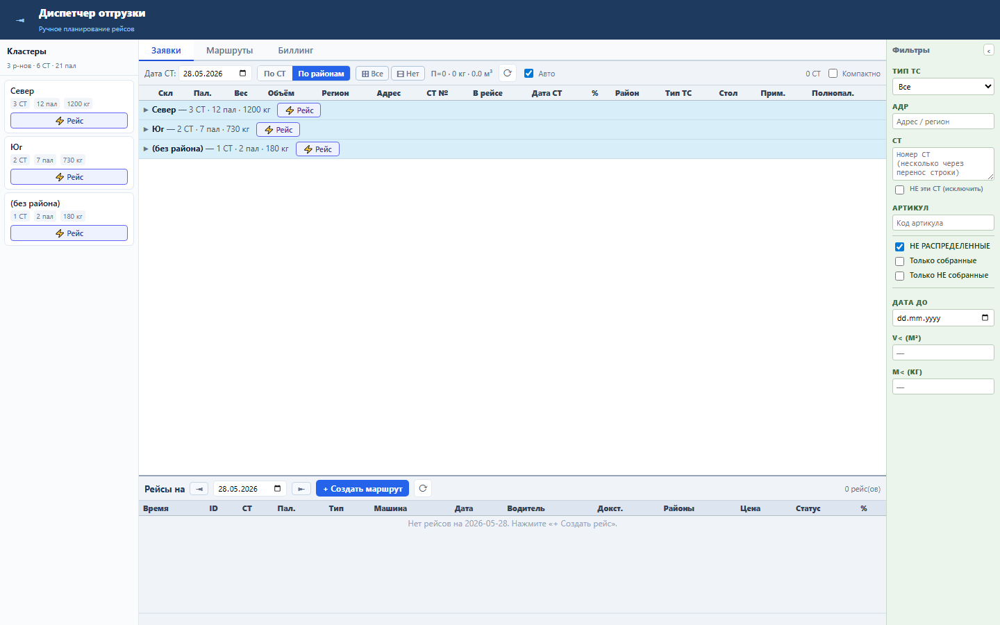
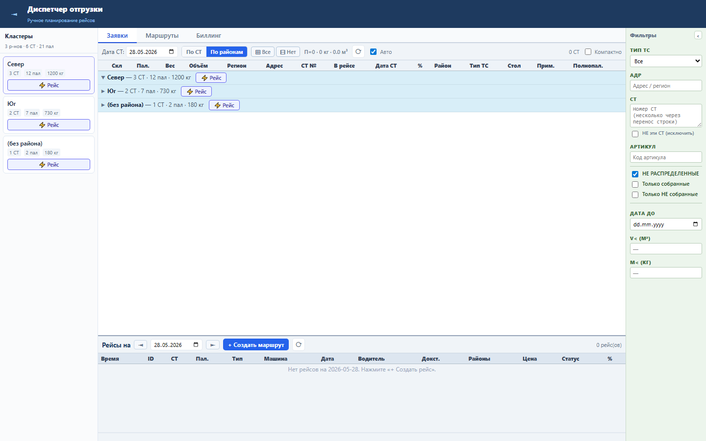
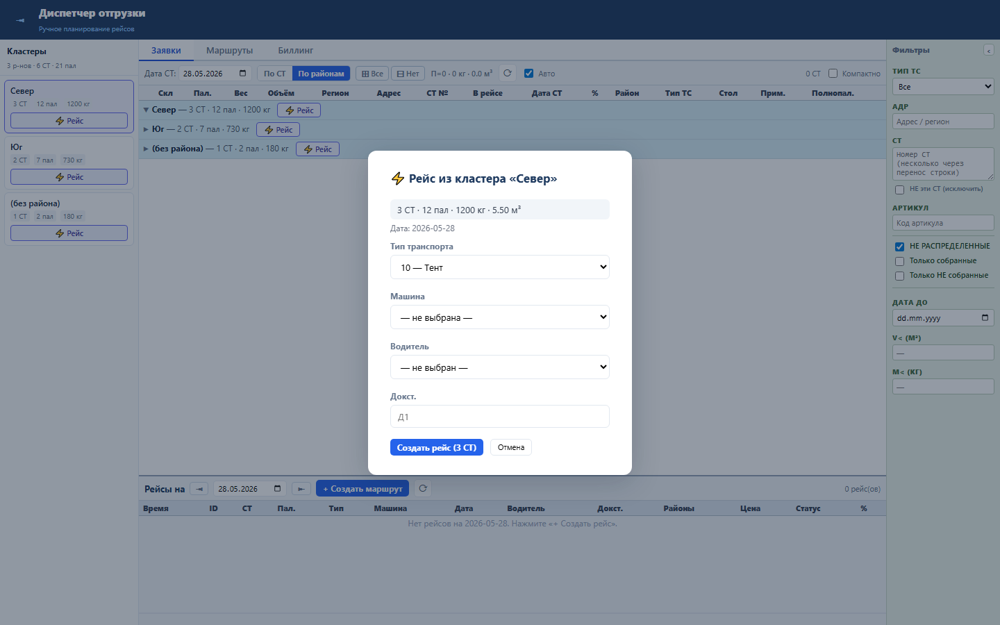

Блок нужен диспетчеру для быстрого обзора свободных СТ по районам без прокрутки основной таблицы.
Панель строится из GET /api/admin/transport/clusters: район, количество СТ, паллеты, вес, объём и список СТ внутри района.
Диспетчер видит все районы слева, раскрывает нужный район в таблице и может начать создание рейса из карточки.



Проверка: functional и UI smoke пройдены; live load gate заблокирован зависшим владельцем порта 8088.